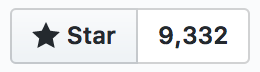
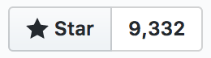
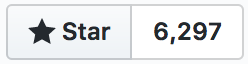
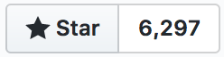

Example
Note: по возможности реализовать фильтр, который позволяет переключать на четные или нечетные карточки.
const arrCards = [{key: 1,}, {key: 2,}, {...}]
<div class="card-wrap"><div class="card">1</div><div class="card">2</div><div class="card">...</div></div>


 

getDefaultStyles() { // нужно создать метод, который будет определятьисходное состояние для каждого элемента (массив объектов)return this.props.children.map(()=> {return {opacity: 0,translateY: 50,};});}getStyles(prevInterpolatedStyles) { // также метод, который будет описывать саму анимацию, используюпредыдущие состояния (они передаются аргументом)return prevInterpolatedStyles.map((_, i) => {if (i === 0) {return {opacity: spring(1, [30, 11]), // функция spring, грубо говоря, задает тип анимации, наподобии ease, ease-in-out и т.д.translateY: spring(0, [30, 11]),};} else {return {opacity: spring(prevInterpolatedStyles[i - 1].opacity),translateY: spring(prevInterpolatedStyles[i - 1].translateY),};}});}
render() {return (// Компонент <StaggeredMotion> как раз рассчитан на анимирование коллекции элементов// В children'ы передается функция, которая будет вызваться всю анимацию<StaggeredMotion defaultStyles={this.getDefaultStyles()} styles={this.getStyles}>{(interpolatingStyles) =><div className="card-wrap">{interpolatingStyles.map((item, i) => {return (<divkey={this.props.children[i].key}className="card"style={{// собственно значения, которое высчитываются в getStyles(изначально состояние выставляется из getDefaultStyles)opacity: `${item.opacity}`,transform: `translateY(${item.translateY}px)`}}datatype={this.props.children[i].type}>{this.props.children[i].key}</div>);})}</div>}</StaggeredMotion>);}
Тоже самое, что и react-motion, но своими руками и оперируя классами
(setState + setTimeout + Recursion = 
 )
)
.card-appear,.card-enter {opacity: 0;transform: translateY(50px);}.card-appear-active,.card-enter-active {opacity: 1;transform: translateY(0);transition: opacity 0.4s ease,transform 0.4s ease;}.card-leave {opacity: 1;}.card-leave-active {opacity: 0;transition: opacity 0.5s ease;}
В данном случае встает вопрос как получить DOM элемент, который нужно анимировать. У нас есть следующие варианты
getElementById, querySelector и т.д.)findDOMNoderef у компонентов (ref={ (node) => { ... } })Для нашей задачи нам достаточно будет ref.
render() {const arrCards = this.props.children;return (<div className="card-wrap">{arrCards.map((item) => {return (<divkey={item.key}className="card"// заносим в локальную коллекцию все эл-тыref={(elem) => { this.arrCards.push(elem); }}>{item.key}</div>);})}</div>);}
fadeIn() {let appearTime = 400;let nextElementDelay = 0.2let animeJS = anime.timeline();animeJS.add({targets: this.arrCards,duration: 1,opacity: 0,translateY: 50,});let index = 0;arrCards.forEach((elem) => {let delay = index++ * nextElementDelay * 1000;animeJS.add({targets: elem,duration: appearTime,opacity: 1,translateY: 0,easing: 'linear',offset: delay,});});}


 

fadeIn() {let appearTime = 0.4;let nextElementDelay = 0.2;let timeline = new TimelineLite();timeline.staggerFromTo(this.arrCards, appearTime, {display: 'none',opacity: 0,y: 50,}, {display: 'block',opacity: 1,y: 0,}, nextElementDelay);}
Но, так или иначе, и React way, и Another way позволяют решать одни и те же задачи, если оба способа заставить работать в содружестве.
// Web Animationsvar animation = new Animation(element, {"transform": "translate(100px, 200px)"}, 1500);// GSAPvar animation = TweenMax(element, 1.5, { x: 100, y: 200 });
.set.to.fromTo.delay.clear.call.addLabel.eventCallbackПлашка должна появляться сверху вниз и исчезать в обратном порядке, то есть снизу вверх.
import TransitionGroup from 'TransitionGroup';import TimelimeLite from 'gsap/TimelimeLite';import 'gsap/CSSPlugin';import 'gsap/EasePack';function Notice(props) {const { message, ...props } = props;return (<div className="notice" {...props}>{message}</div>);}export default function (props) {const { animate, duration, message } = props;if (animate) {return (<TransitionGroup>{ message ? <NoticeContainer message={message} duration={duration} /> : null }</TransitionGroup>);} else {return message ? Notice({ message }) : null;}};
class NoticeContainer extends Component {defaultProps = {duration: 0.7, // длительность анимации};elem = null; // DOM эл-тrect = {}; // объект с координатами эл-таheight = 0; // высота эл-таtimeline = new TimelineLite(); // GSAPcomponentDidMount() {this.show();}// callback дает знать, что компонент готов к удалениюcomponentWillLeave(callback) {this.hide(callback);}componentWillUnmount() {// очищаем объект таймлайна, чтобы он не хранил ссылку на DOM эл-тthis.timeline = null;}
show() {this.rect = this.elem.getBoundingClientRect();this.height = this.rect.height + this.rect.top;this.timeline.fromTo(this.elem, this.props.duration, {y: `-${this.height}px`,}, {y: 0,ease: Bounce.easeOut,});}hide(onComplete) {this.timeline.to(this.elem, this.props.duration, {y: `-${this.height}px`,onComplete: onComplete,});}getNode(node) {this.elem = node;}render() {return Notice({ref: this.getNode.bind(this),message: this.props.message,});}}